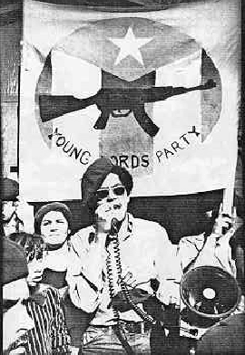
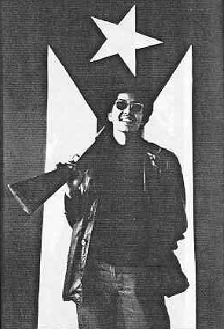

The Young Lords Party's
Thirteen-Point Program and Platform (1969)

The Young Lords Party is a Revolutionary Political Party Fighting for the Liberation of All Oppressed People
1. We want self-determination for Puerto Ricans—Liberation of the Island and inside the United States.
For 500 years, first Spain and then United States have colonized our country. Billions of dollars in profits leave our country for the United States every year. In every way we are slaves of the gringo. We want liberation and the Power in the hands of the People, not Puerto Rican exploiters.
Que Viva Puerto Rico Libre!
2. We want self-determination for all Latinos.
Our Latin Brothers and Sisters, inside and outside the united states, are oppressed by amerikkkan business. The Chicano people built the Southwest, and we support their right to control their lives and their land. The people of Santo Domingo continue to fight against gringo domination and its puppet generals. The armed liberation struggles in Latin America are part of the war of Latinos against imperialism
Que Viva La Raza!
3. We want liberation of all Third World people.
Just as Latins first slaved under Spain and the yanquis, Black people, Indians, and Asians slaved to build the wealth of this country. For 400 years they have fought for freedom and dignity against racist Babylon (decadent empire). Third World people have led the fight for freedom. All the colored and oppressed peoples of the world are one nation under oppression.
No Puerto Rican Is Free Until All People Are Free!
4. We are revolutionary nationalists and oppose racism.
The Latin, Black, Indian and Asian people inside the United States are colonies fighting for liberation. We know that Washington, Wall Street and City Hall will try to make our nationalism into racism; but Puerto Ricans are of all colors and we resist racism. Millions of poor white people are rising up to demand freedom and we support them. These are the ones in the U.S. that are stepped on by the rules and the government. We each organize our people, but our fights are against the same oppression and we will defeat it together.
Power To All Oppressed People!
5. We want community control of our institutions and land.
We want control of our communities by our people and programs to guarantee that all institutions serve the needs of our people. People's control of police, health services, churches, schools, housing, transportation and welfare are needed. We want an end to attacks on our land by urban removal, highway destruction, universities and corporations.
The Land Belongs To All The People!
6. We want a true education of our Creole culture and Spanish language.
We must learn our history of fighting against cultural, as well as economic genocide by the yanqui. Revolutionary culture, culture of our people, is the only true teaching.
7. We oppose capitalists and alliances with traitors.
Puerto Rican rulers, or puppets of the oppressor, do not help our people. They are paid by the system to lead our people down blind alleys, just like the thousands of poverty pimps who keep our communities peaceful for business, or the street workers who keep gangs divided and blowing each other away. We want a society where the people socialistically control their labor.
Venceremos!
8. We oppose the Amerikkkan military.
We demand immediate withdrawal of U.S. military forces and bases from Puerto Rico, Vietnam and all oppressed communities inside and outside the U.S. No Puerto Rican should serve in the U.S. army against his Brothers and Sisters, for the only true army of oppressed people is the people's army to fight all rulers. U.S. Out Of Vietnam, Free Puerto Rico!
9. We want freedom for all political prisoners.
We want all Puerto Ricans freed because they have been tried by the racist courts of the colonizers, and not by their own people and peers. We want all freedom fighters released from jail. Free All Political Prisoners!
10. We want equality for women.
Machismo must be revolutionary, not oppressive. Under capitalism, our women have been oppressed by both society and our own men. The doctrine of machismo has been used by our men to take out their frustrations against their wives, sisters, mothers, and children. Our men must support their women in their fight for economic and social equality, and must recognize that our women are equals in every way within the revolutionary ranks.
Forward, Sisters, In The Struggle!
11. We fight anti-communism with international unity.
Anyone who resists injustice is called a communist by "the man" and condemned. Our people are brainwashed by television, radio, newspapers, schools, and books to oppose people in other countries fighting for their freedom. No longer will our people believe attacks and slanders, because they have learned who the real enemy is and who their real friends are. We will defend our Brothers and Sisters around the world who fight for justice against the rich rulers of this country.
Viva Che!
12. We believe armed self-defense and armed struggle are the only means to liberation.
We are opposed to violence—the violence of hungry children, illiterate adults, diseased old people, and the violence of poverty and profit. We have asked, petitioned, gone to courts, demonstrated peacefully, and voted for politicians full of empty promises. But we still ain't free. The time has come to defend the lives of our people against repression and for revolutionary war against the businessman, politician, and police. When a government oppresses our people, we have the right to abolish it and create a new one.
Boricua Is Awake! All Pigs Beware!
13. We want a socialist society.
We want liberation, clothing, free food, education, health care, transportation, utilities, and employment for all. We want a society where the needs of our people come first, and where we give solidarity and aid to the peoples of the world, not oppression and racism.
Hasta La Victoria Siempre!